[新竹] 金福越式河粉
| 餐廳名稱: | 金福越式河粉 |
|---|---|
| 地 址: | 新竹市北區北大路166巷1弄2號 |
| 營業時間: | 11:30~14:30 17:30~21:00 |
| 週四公休 | |
| 電 話: | 035250750 |
金福本來是一間私人經營的Coffee Shop，後來轉型賣河粉， 然後 Stanley 牛排 所屬的食時創新餐飲集團 併購這家店， 成為集團成員之一。 一開始叫 金福越泰小館，本來連泰國菜也賣，後來決定專心 賣越南河粉，所以最後叫 金福越式河粉。雖然FB粉專名字 還是越泰小館，不過粉專圖片，門口招牌，都已經是 金福越式河粉。
因為 食時創新餐飲集團 送我一張 舒肥手撕雞湯粉 禮物券， 五月底到期，對 Stanley牛排 印象算不錯，上星期就衝來 嚐鮮了，無奈客滿，這次準備充分，11點半就衝來了， 總算有位子了，還找到一個演藝路難得的停車位，北大路 的大停車場一如往常地客滿。 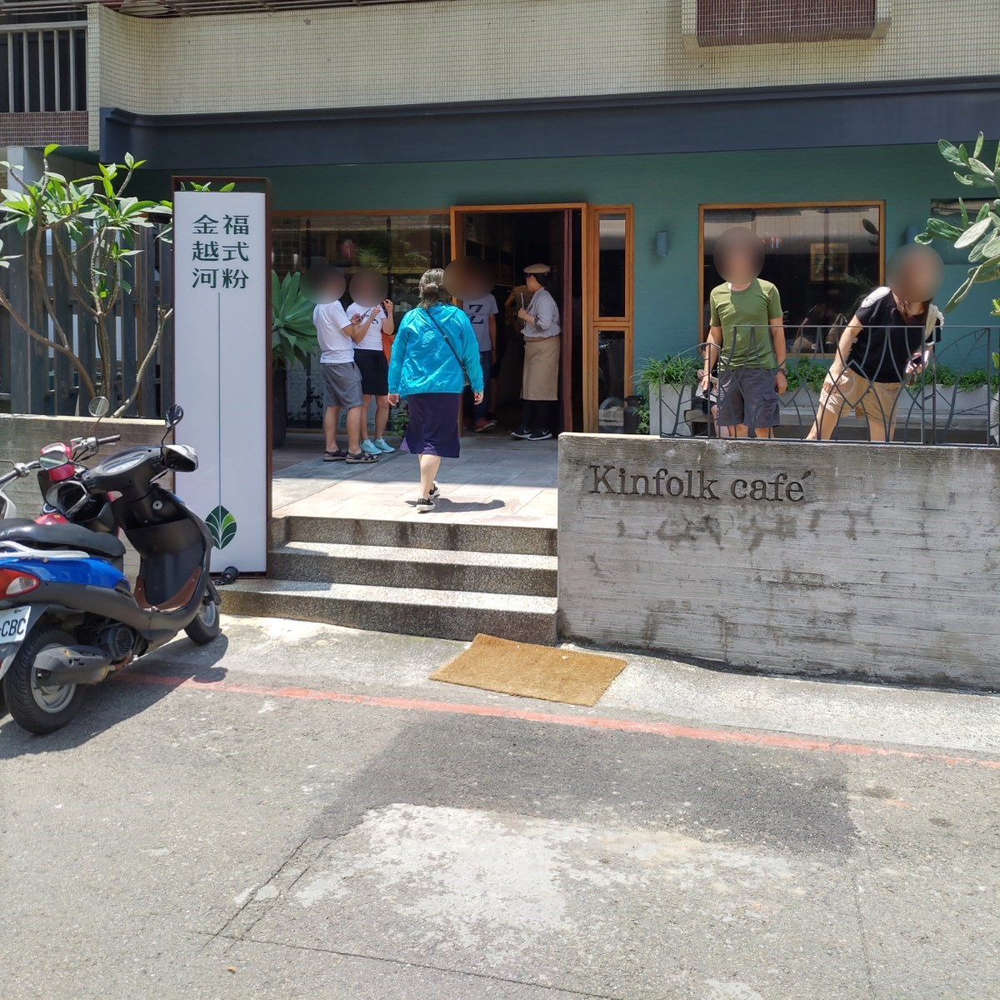
免費的飲料，泰式奶茶 與 越式鹽漬檸檬汁，濃度都還行，雖然不是 我喝過最好喝的奶茶與檸檬汁，不過免費的飲料，濃到這種程度，算 蠻大氣的了。 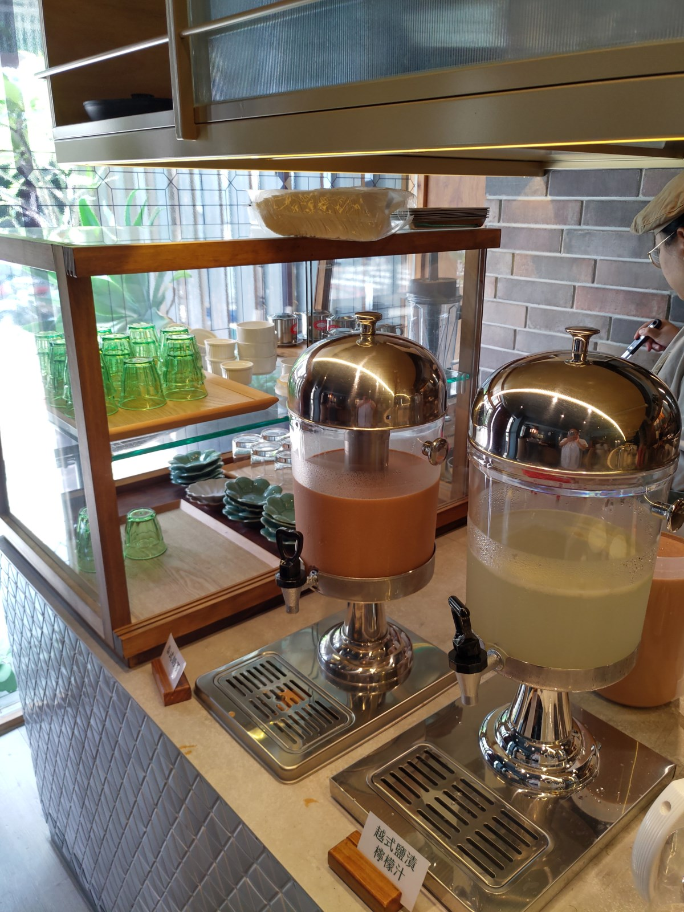
中間有個櫥櫃，主要是兒童餐具與盤子，裝醬料的小碗，可是獨缺 最重要的小湯碗，這是分食河粉必備的啊，以 Stanley 集團會沒想到 這件事，我也很意外。底下櫃子打開左邊是鐵湯匙，右邊是餐巾紙等， 似乎並不是規劃讓客人打開的，只是我打開時，服務生也沒阻止。 我拿了鐵湯匙回座位後，才發現是誤會，每碗河粉都有附一根漂亮的 大瓷湯匙，剛剛就是那麼巧，我的視角沒看到河粉湯碗的背部已經有 湯匙了。 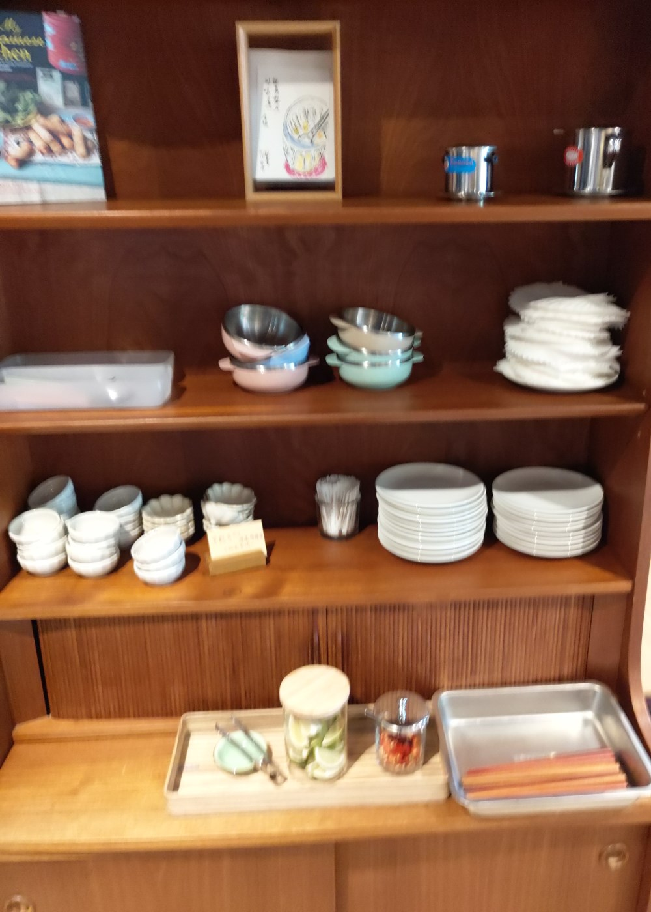
每張桌子都有筷子與兩種醬料。 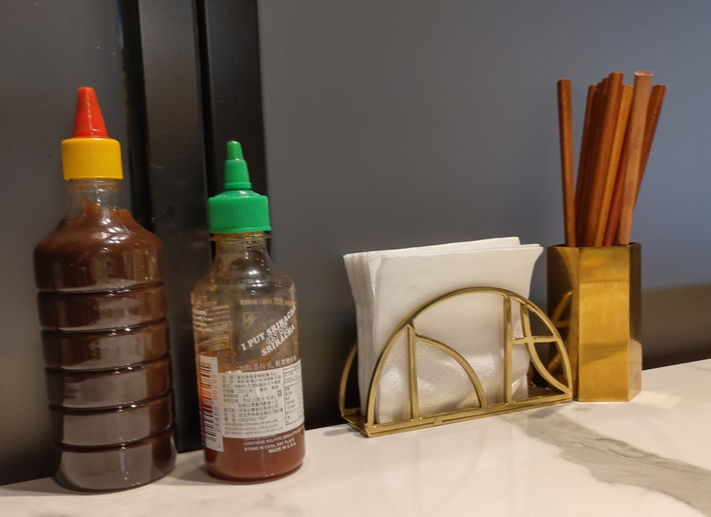
點餐方式蠻創新的，必須用自己的智慧手機點餐，首先，最下面有 Wi-Fi 密碼，如果沒有電信公司提供的 Internet 或是想省頻寬費 就要先接他們家的免費 Wi-Fi。
然後掃描 QR-Code，手機的瀏覽器就會開啟特定網站，桌號隱含在QR-Code 中，不用再輸入桌號。 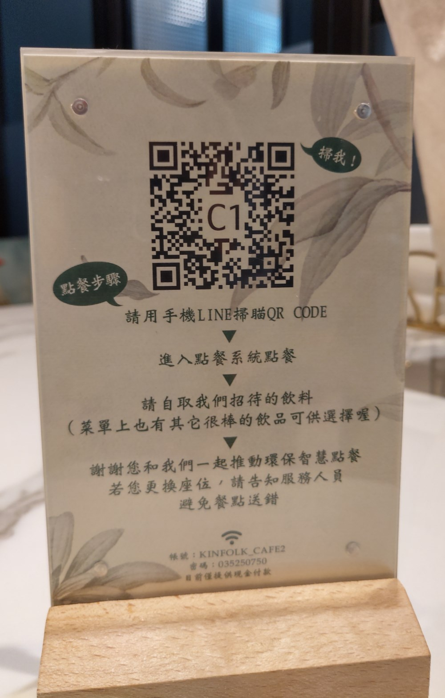
比較討厭的是下方的 “確認"按鈕，因為手機傳來傳去點餐，也不知道 點了什麼，“確認” 兩個字讓我誤會訂單就要送出去了，後來 按下去後，原來是顯示目前所點的品項，還有一個 “傳送” 按鈕， 按下 “傳送” ，訂單才生效。 所以"確定” 應該改成 “下一頁” 或 “進入購物車” 這種隱含可以做最後檢查，才會真的傳送，比較 不容易誤會。 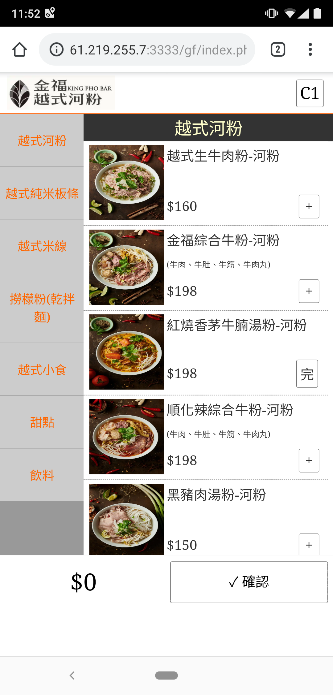
等待的時間，當然拿了 泰式奶茶 與 越式鹽漬檸檬汁 來喝。不錯喝。 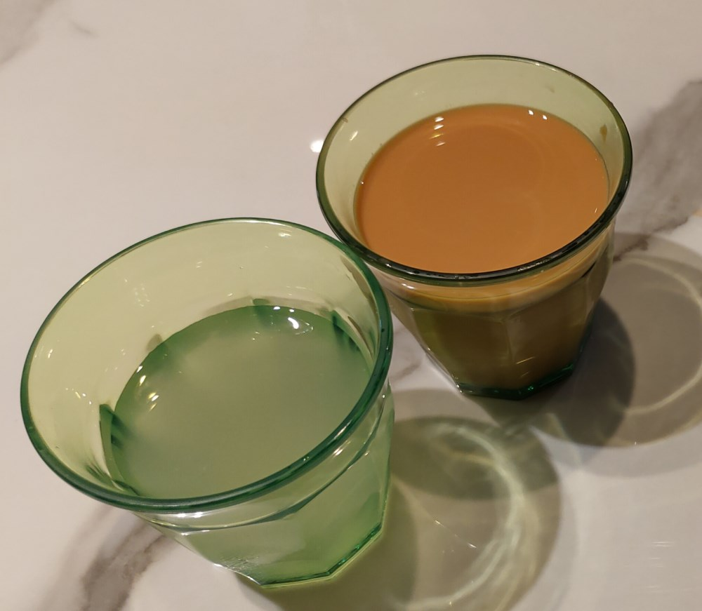
越式炸春捲，還行，不過之前剛好在 新竹市東南街 秋賢越南美食 吃到更好吃的越式炸春捲。 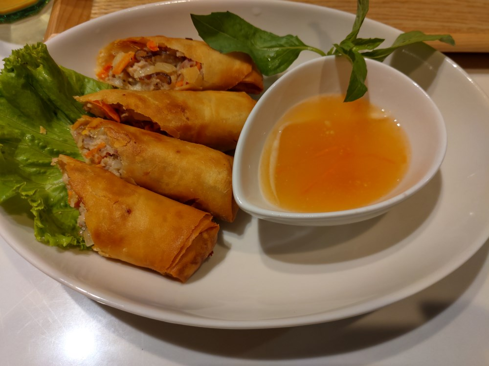
舒肥手撕雞湯粉，正常，只是我自己是重口味，需要再加一些調味料。 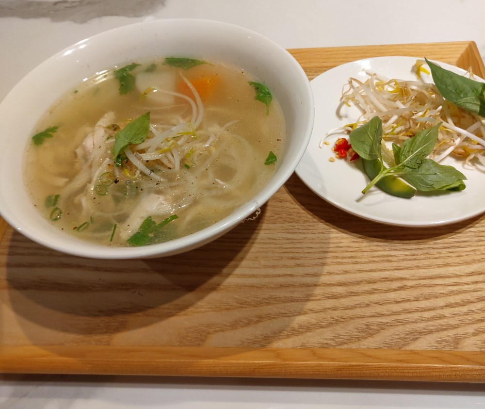
越南生牛肉河粉，湯頭明顯跟手撕雞湯粉不一樣，它菜單還有紅燒香茅牛腩， 蟹膏番茄湯粉 等，一般的店不大可能熬這麼多種湯頭吧。也許只有熬 一種基本的高湯，然後淋在生牛肉上，燙熟的同時，湯頭味道也稍微改變。 不過這幾年覺得是 竹北[PhoV 弗薇越式餐廳] ( https://www.facebook.com/phov035501758/ ) 的牛肉河粉似乎比較好吃，只是弗薇開分店後，水準似乎也有降一些。
這邊的生牛肉河粉 還有個小缺點，就是生牛肉片沒有一片一片攤開， 所以滾燙高湯沖下去後，有兩、三片牛肉黏在一起，也許這是因為牛肉片 是從冷凍庫拿出來的吧，無法等到解凍，只能立刻沖高湯。Anyway，還是 給予 正常 的評價。 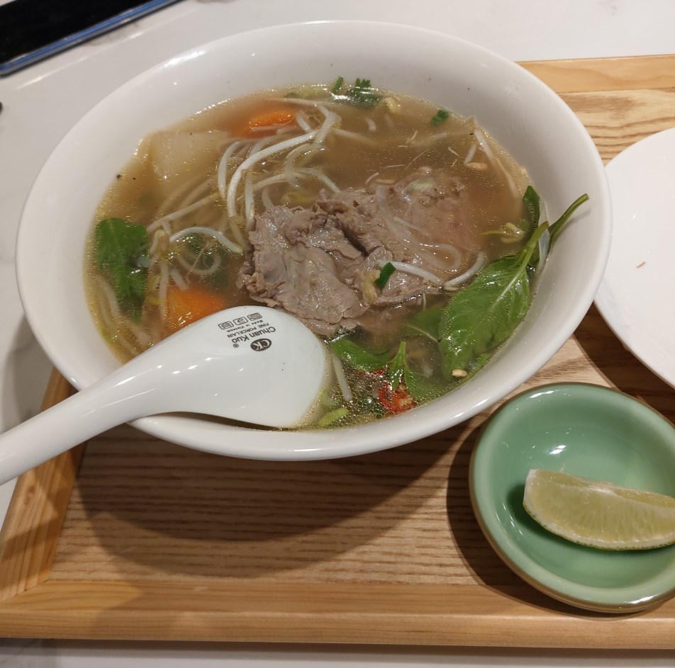
加點的 鮮蝦生春捲 與 涼拌雞絲沙拉，嗯，正常。 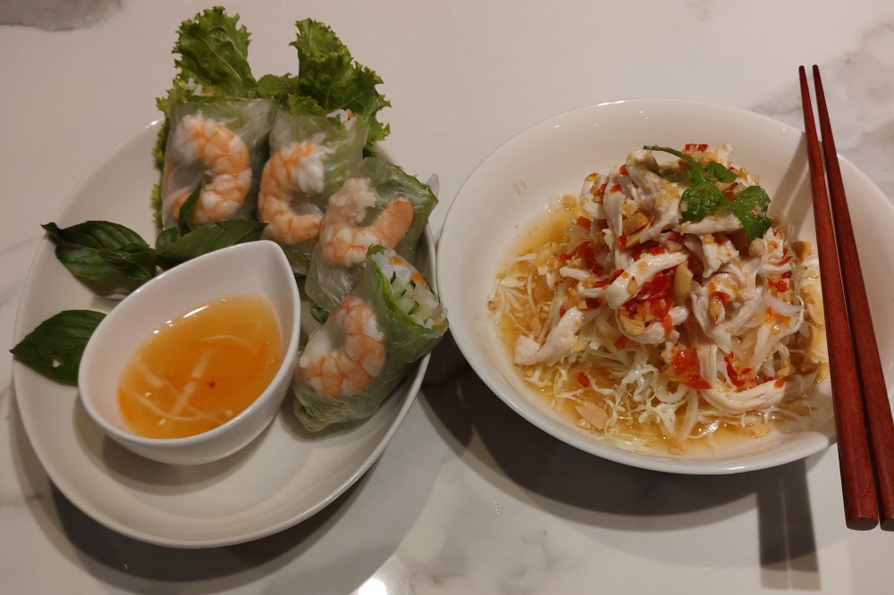
摸摸喳喳，有放椰果，甜度也夠，這個好吃。 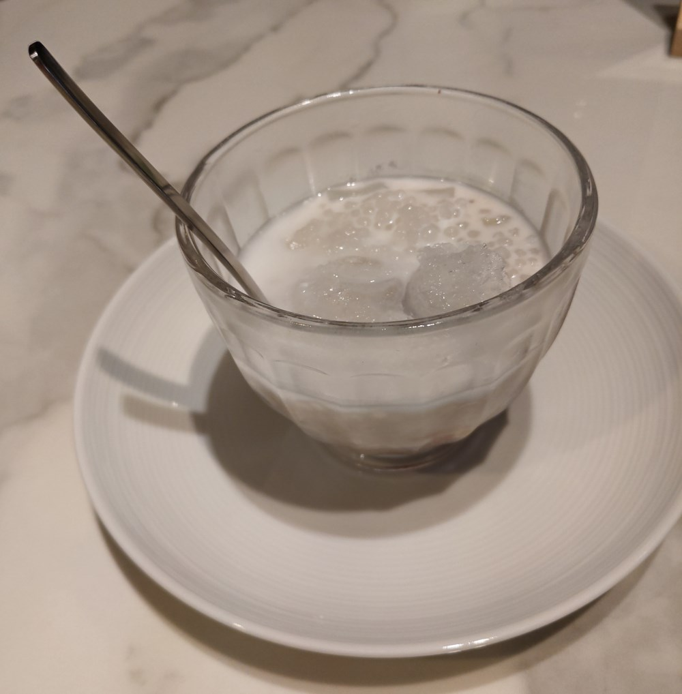
目前金福越式河粉的水準 其實是可以了啦，所以很常客滿，我都還要跑兩遍才 吃的到。服務態度跟Stanley牛排差不多優秀，口味都正常。 只是我對Stanley集團的要求比較高，以整個集團的資源，應該還能調整的更好， 看它品牌故事捧了越南阿嬌主廚，結果搞半天只是文青的吶喊，不知道阿嬌主廚 的店開在哪裡? 真想去試試阿嬌主廚親自煮的河粉。